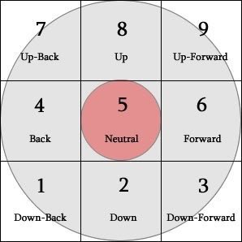

Instruction Manual
Universal Mechanics
Airdash
A dash performed in the air, exactly as it sounds. Performed by quickly pressing either backwards or forwards twice in the air.
Charging
Performed by holding the "Special" (J for player one, number pad 4 for player two) button, charging increases meter. Meter is used for Special Moves.
Special Moves
Performed by inputing a certain combination of buttons, and uses a certain amount of meter. If there is not enough meter, the move is not performed. Special moves, aside from InstaKills, will use either 25 or 50 meter.
InstaKill
Performed by using the 41236S Special Move, the InstaKill uses 100 meter and instantly kills the opponent.
Player One
Use WASD to move. Use U (Light) I (Medium) O (Heavy) to attack. Use J (Special) to charge meter.
Special Moves
Use Special Moves by performing a special input with WASD, then press J (Special)
236S: Quickly, press down, then down and toward your opponent, then let go of down and keep holding toward your opponent. Then, press J. This will trigger the attack.
22S: Quickly, press down, release down, then press down again. Then, press J. This will trigger the attack.
41236S: Quickly, press away from your opponent, keep holding and press down, let go of away from your opponent while still holding down, keep holding down and press right, then let go of down. Then, press J. This will trigger the attack.
Player Two
Use the Arrow Keys to move. Use numpad7 (Light) numpad8 (Medium) numpad9 (Heavy) to attack. Use numpad4 (Special) to charge meter.
Special Moves
Use Special Moves by performing a special input with the arrow keys, then press numpad4 (Special)
236S: Quickly, press down, then down and toward your opponent, then let go of down and keep holding toward your opponent. Then, press numpad4. This will trigger the attack.
214S: Quickly, press down, then down and away from your opponent, then let go of down and keep holding away from your opponent. Then, press numpad4. This will trigger the attack.
41236S: Quickly, press away from your opponent, keep holding and press down, let go of away from your opponent while still holding down, keep holding down and press right, then let go of down. Then, press numpad4. This will trigger the attack.
*Numpad Notation Notes
The 236S, 214S, 22S, and 41236S attacks are named after their inputs. The S stands for special, which you press after the attack. The numbers are based off of "numpad notation." It works like this:

Imagine a number pad, but only with the numbers 1 to 9. This is a visual representation of it. Now, imagine you are on the left of an opponent. The number 5 is neutral, you are not pressing any directions.
The number 2 is down, the number 6 is forward, and so on and so forth. If you were on the right of an opponent, the number pad inverts, so 6 is on the left instead of right, and so forth.
Using this notation, there is a standardized way of saying move names. That way, people don't have to say "down, downback, back, J" or "Quarter circle back J" (though that is also occasionally used) which take much longer to spell out and say.